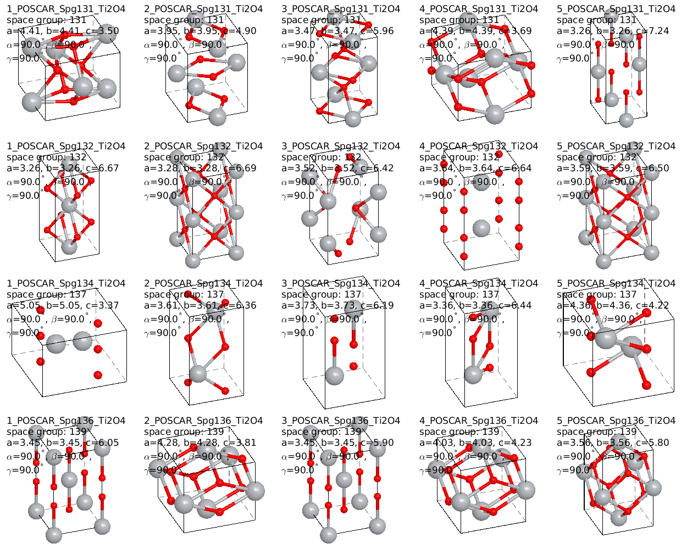
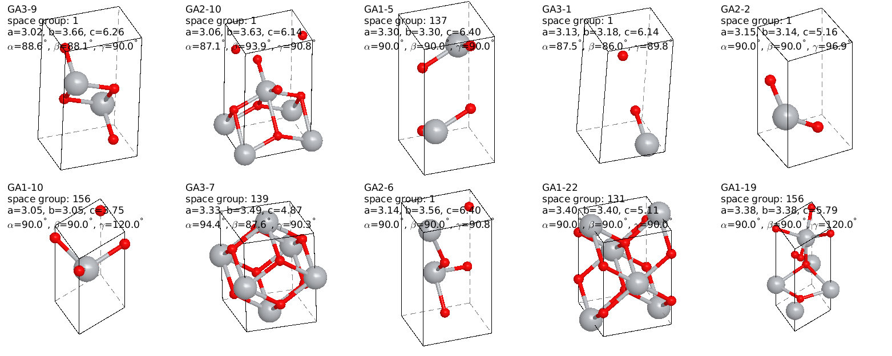
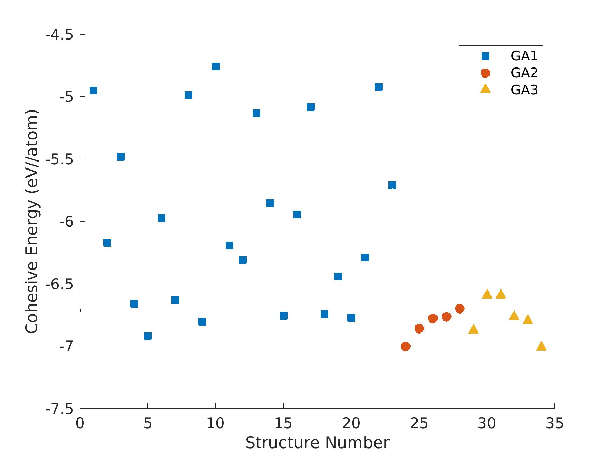
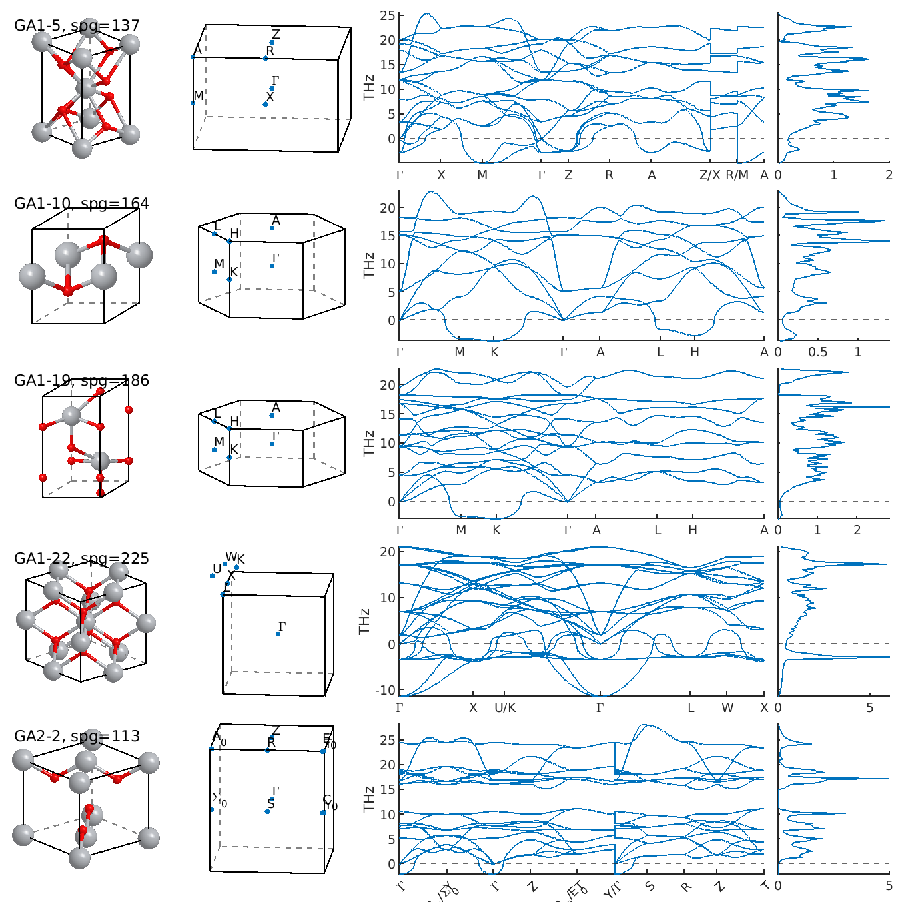

Integrate with AISP
This tutorial demonstrates how to utilize AISP to generate crystal structures and display their band structures and DOS.
Prerequisites
Contact dancingw (at) ustc.edu.cn for newest AISP version.
About AISP
AISP’s primary function is to perform structure prediction for research objects in fields such as chemistry, physics, and biology. For more information, visit the official website: https://aisp.tech/
Its research objects mainly include:
Three-dimensional bulk materials
Two-dimensional planar materials
Van der Waals crystals
One-dimensional atomic chains
Zero-dimensional molecules and clusters (under development)
AISP mainly consists of two major components:
AispGen program: Generates initial structures
AispOp program: Performs subsequent structure optimization and prediction
A complete structure prediction and screening process typically involves two steps:
Step 1: AispGen generates the initial structures that need iteration
Step 2: AispOp reads the initial structures and performs subsequent structure iteration and prediction
Generate initial structures
First, we need to prepare the input file aisp.in in json format. Here is an example for TiO₂, we specify chemical composition and space group:
{
"userdir": "user",
"SystemName": "TiO2",
"Composition": {
"Ti": 1,
"O": 2
},
"NumofComposition": [
1,
2
],
"LatticeType": 3,
"SpgAndNum": {
"0": [
"130-180"
]
},
"NumPerGroup": 5,
"MaxAttemps": 1000,
"NCORE": 4
}
Then run the following command in the terminal:
./AISP -gen aisp.in
After running AISP, the generated directory structure is as follows:
.
├── aisp.in # Input configuration file
├── TiO2_statistics.txt # Statistics file
├── TiO2_summary.txt # Summary file
└── user/ # User directory
└── TiO2/ # Material directory
├── 1_POSCAR_Spg162_Ti1O2
├── 2_POSCAR_Spg167_Ti1O2
├── 3_POSCAR_Spg176_Ti1O2
├── 4_POSCAR_Spg194_Ti1O2
└── ... # More structure files
For the subsequent AISP -op program, we need to move all generated POSCAR files to the user/TiO2/structure directory.
cd user/TiO2
mkdir structure
mv *_POSCAR* structure
Then, create TiO2.m in the user/TiO2 directory to view those structures.
% I put vphmat scripts in ~/vphmat
addpath('~/vphmat')
%%
VPHMAT.setBondLength('Ti','O',2.5);
aisp=AISP.gen('structure');
aisp.plot('cols',5,'rows',4)
% save figure
aisp.print('formattype','-dpng','renderer','-image')
{kind=link}

TiO₂ structures generated by AISP
Use genetic algorithm to generate more structures
First, we need to prepare the input file input.yaml.
latticeType: 3 # 3D structure
popSize: 10 # number of structures of per generation
numGen: 3 # number of total generation
saveGood: 2 # number of good structures (20% of popSize) kept to the next generation
kpointDensity: 0.06
mpirun: mpirun
exe: vasp_std
np: 64
parallel_job: 6
Also prepare slurm script aisp.slurm to run VASP on HPC, using the template provided by the AISP package. Notice that -N should be the same as parallel_job, and --ntasks-per-node should be the same as np. You also need to modify the module loading part.
Prepare INCAR (for lattice relaxation, suggest setting ISIF=3, ISYM=0, EDIFF = 1E-5, EDIFFG = -0.02, NSW = 50) and POTCAR files in the user/TiO2/structure directory.
Submit the job to HPC:
sbatch aisp.slurm
The generated directory structure is as follows:
.
└── TiO2/ # Material directory
├── aisp.slurm # Slurm script to run VASP on HPC
├── input.yaml # Input configuration file
├── best_pop.txt
├── delete.txt
├── fail_pop.txt
├── TiO2.m # Matlab script to view structures
├── structure/ # Structure directory
├── INCAR
├── POTCAR
└── ...
├── GA1/ # Generation 1 directory, structures are from structure/
├── relax_pop.txt # all structures relaxed by VASP
├── good_pop.txt # good structures (with lowest cohesive energy, they are parents of the next generation)
├── keep_pop.txt
├── GA1-1/
├── POSCAR
├── OUTCAR
└── ...
├── GA1-2/
└── ...
├── GA2/ # Generation 2 directory
└── GA3/ # Generation 3 directory
Add the following code to TiO2.m to view the structures in each generation:
%% view GA2 structures
ga2=AISP.ga('GA2');
ga2.plot('cols',5,'rows',2)
Add the following code to TiO2.m to view good structures:
%% view good structures from GA3/good_pop.txt
aisp=AISP.op('.');
aisp.plot('cols',5,'rows',2)
% plot cohesive energy
figure
aisp.plotcohesive
% information of good structures
aisp.infogood
{kind=link}

Structures from GA3/good_pop.txt
{kind=link}

Cohesive energy of every generation
Phonon, band and DOS calculation
# copy good structures from GA3/good_pop.txt to `post` dir.
./good_pop.sh
# relax structures in higher precision and perform phonon calculation
./post_relax_dfpt.sh
The generated directory structure is as follows:
.
└── TiO2/ # Material directory
├── TiO2.m # Matlab script to view structures
└── post/ # Post-processing directory
├── GA1-5/ # vaspdir
├── relax/
├── POSCAR
├── CONTCAR
├── OUTCAR
└── ...
├── DFPT/
├── POSCAR
├── POSCAR-unitcell
├── OUTCAR
├── DYNMAT
├── FORCE_CONSTANTS
├── phonopy.yaml
├── band.conf
├── band.yaml
├── dos.conf
├── mesh.yaml
├── total_dos.dat
└── ...
├── GA1-10/ # vaspdir
└── ...
During the phonon calculation, we can check phonon dispersion and DOS by adding the following code to TiO2.m:
%% check phonon dispersion
aisp=AISP.post('post');
aisp.plot('style',1,'rows',5); % style 1: plot crystal structure, reciprocal lattice, phonon dispersion and phdos
{kind=link}

TiO₂ phonon dispersion
Note
For virtual phonon modes appear in TiO₂, please refer to http://staff.ustc.edu.cn/~zqj/posts/Phonopy-Rutile-TiO2/ https://journals.aps.org/prb/abstract/10.1103/PhysRevB.81.134303
Typically, structures with phonon frequency > -0.2418 THz are considered dynamically stable, then we calculate other properties of these structures, such as band structure, DOS and elastic constants.
# calculate band structure (dynamically stable structures)
./post_band.sh
The generated directory structure is as follows:
.
└── TiO2/ # Material directory
├── TiO2.m # Matlab script to view structures
└── post/ # Post-processing directory
├── GA1-5/ # vaspdir
├── relax/
├── DFPT/
├── scf/
├── band/
├── GA1-10/ # vaspdir
└── ...